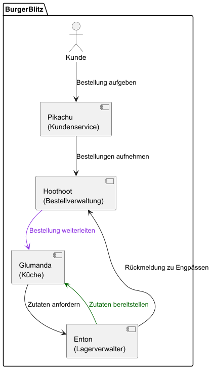
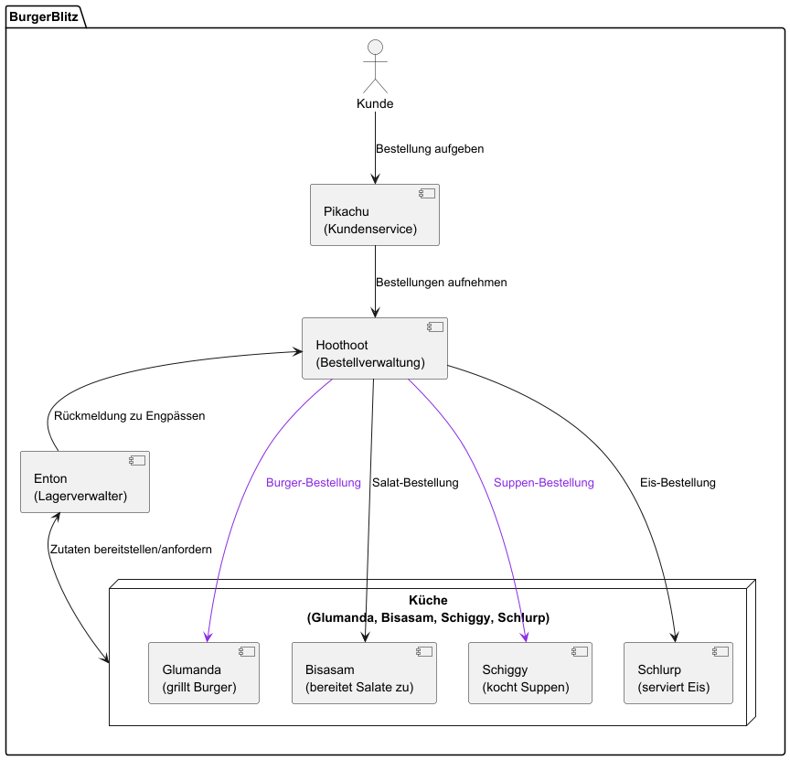
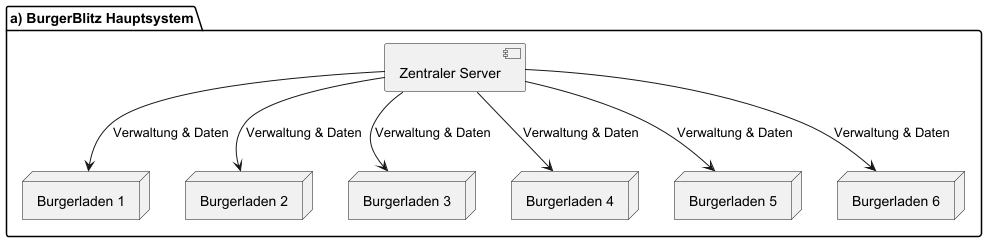
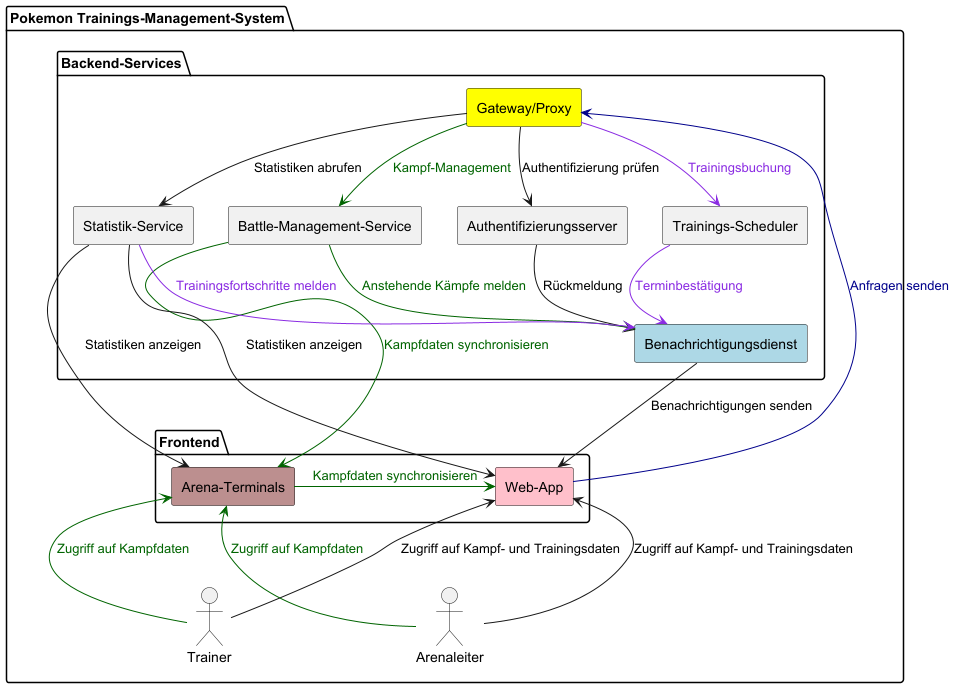

Aufgabe 1: Pikachus Burgerladen
Pikachu und seine Freunde möchten einen Burgerladen namens „BurgerBlitz“ aufmachen. Der Burgerladen soll auf den Architekturen und Kommunikationsmustern basieren, welche Pikachu in Praktische Informatik 2 während seinem Informatik-Studium kennengelernt hat.
Der erste Burgerladen
Für den ersten Burgerladen plant Pikachu folgende Struktur mit vier Komponenten:
- Pikachu übernimmt den Kundenservice. Pikachu begrüßt die Kunden und nimmt ihre Bestellungen auf, übergibt die Bestellung dann an die Bestellverwaltung.
- Hoothoot übernimmt die Bestellverwaltung. Hoothoot überprüft, ob die Zutaten vorhanden sind und stellt die Bestellung zur Küche durch.
- Glumanda übernimmt die Küche. Glumanda grillt das Patty und fügt die Zutaten entsprechend der Bestellung hinzu.
- Enton ist Lagerverwalter. Enton stellt sicher, dass das Lager korrekt bestückt ist. Enton gibt geforderte Zutaten an die Küche weiter und meldet Hoothoot auf Anfrage die Engpässe und Bestandsergänzungen.
Erstellen Sie mittels PlantUML ein Komponenten-Diagramm für den Burgerladen.
An welcher Architektur von verteilten Systemen ist der Burgerladen angelehnt?
Die Architektur, die hier dargestellt wird, ist angelehnt an ein verteiltes System mit klarer Arbeitsteilung und Kommunikation zwischen den verschiedenen Diensten.Mit welchen Kommunikationsmustern würden Sie die vier Komponenten verbinden? Begründen Sie ihre Antwort.
Bei Message Queuing kann Beispielsweise der Kundenservice (Pikachu) Bestellungen aufnehmen und in eine Queue stellen, während die Bestellverwaltung (Hoothoot) die Bestellungen verarbeitet, ohne dass Pikachu auf eine sofortige Antwort wartet. Request-Response ist sinnvoll, wenn die Komponenten in Echtzeit miteinander kommunizieren müssen, z. B. wenn der Kundenservice sofortige Rückmeldungen an die Kunden benötigt.Erweitern der Speisekarte
Der Laden läuft super und Pikachu möchte die Speisekarte um Salate, Suppen und Eis erweitern. Dazu müssen die Aufgaben in der Küche an mehrere Pokemon verteilt werden. Bisasam übernimmt die Salate, Schiggy die Suppen und Schlurp das Eis.
Skizzieren Sie die Struktur des neuen Burgerladens mit jedem Pokemon als eine Komponente. Welcher Architektur entspricht dieser neuen Aufgabenverteilung?
Die Aufgabenverteilung entspricht einer service-orientierten Architektur (SOA). Das bedeutet, dass das System in spezialisierte, unabhängige Dienste aufgeteilt ist, die jeweils eine bestimmte Aufgabe erfüllen. Z.B. Könnten die Salate leere gehen und Bisasam kann die Zutaten an Enton anfordern, ohne dass es Schlurp beeinflusst, obwohl beide in der gleichen Küche (Topic) sind.
Mit welchem Kommunikationsmuster könnte die Bestellverwaltung jetzt mit den Komponenten der Küche kommunizieren?
Man könnte mit Publish-Subscribe kommunizieren. Hier kann die Bestellverwaltung als „Publisher“ fungieren und Nachrichten über das „Topic“ Küche an alle interessierten „Subscriber“ (in diesem Fall die verschiedenen Küchendienste) senden.Expansionsbestrebungen
Nach einem Jahr möchte Pikachu fünf weitere Burgerläden im Umkreis errichten.
Beschreiben Sie wie die Expansion als (a) zentrales System und als (b) dezentrales System aussehen könnte. Nennen Sie die Vor- und Nachteile beider Systeme.
a) Zentrales System: Ein zentraler Server verwaltet die Daten und Kommunikation für alle Burgerläden.
Vorteile:
- Alle Daten und Prozesse werden über einen Hauptserver gesteuert, was eine einfache Kontrolle und Überwachung ermöglicht.
- Durch die zentrale Speicherung und Verwaltung der Daten bleibt die Datenkonsistenz (Datenübereinstimmung) gewahrt. Alle Filialen greifen auf dieselbe Datenbasis zu, was Fehler durch inkonsistente Daten verringert.
- Software-Updates oder Änderungen müssen nur einmal am zentralen Server durchgeführt werden und wirken sich automatisch auf alle verbundenen Filialen aus.
- Die zentrale Steuerung kann Betriebskosten senken, da weniger technische Infrastruktur und personelle Ressourcen für jeden einzelnen Laden erforderlich sind.
Nachteile:
- Wenn der zentrale Server ausfällt, könnten alle angeschlossenen Filialen betroffen sein (Single Point of Failure).
- Bei hoher Last kann der zentrale Server ein Engpass sein, der zu Leistungseinbußen führt.
b) Dezentrales System: Jeder Burgerladen arbeitet autark (unabhängig und selbständig) und kann unabhängig vom zentralen System agieren. Es gibt eine Datensynchronisation zwischen den Läden, um Redundanz (Mehrfachvorhandensein) zu gewährleisten.
Vorteile:
- Jeder Laden funktioniert unabhängig, sodass der Ausfall eines einzelnen Standorts keinen Einfluss auf die anderen hat.
- Die Filialen können lokale Anpassungen und Entscheidungen treffen, die ihren spezifischen Bedürfnissen entsprechen, ohne auf eine zentrale Genehmigung zu warten.
- Neue Filialen können hinzugefügt werden, ohne dass die Leistung eines zentralen Servers beeinträchtigt wird. Dies macht das System besser anpassbar für Wachstum.
- Selbst bei einer Störung der zentralen Verbindung können die einzelnen Standorte weiterhin arbeiten.
Nachteile:
- Die Synchronisation der Daten zwischen den Standorten ist schwieriger zu gewährleisten, was zu potenziellen Inkonsistenzen führen kann.
- Jeder Standort benötigt seine eigene Infrastruktur und möglicherweise separate technische Unterstützung.
- Das Management eines Systems, das nicht zentral gesteuert wird, kann komplizierter sein und erfordert eine abgestimmte Zusammenarbeit zwischen den Standorten.
Aufgabe 2: Trainings-Management-System
Die Pokemon-Liga plant die Entwicklung eines verteilten Systems zur Verwaltung von Trainingseinheiten und Arenakämpfen. Das System soll folgende Komponenten besitzen:
- Ein zentraler Authentifizierungsserver verwaltet die Zugangsdaten aller registrierten Trainer und Arenaleiter.
- Ein Trainings-Scheduler koordiniert die Reservierung von Trainingsarealen in den verschiedenen Städten. Trainer können freie Slots buchen und ihre Pokemon für spezielle Trainingseinheiten anmelden.
- Ein Battle-Management-Service organisiert die Arenakämpfe. Er kommuniziert mit den Arena-Terminals vor Ort und synchronisiert Kampfergebnisse.
- Ein Statistik-Service sammelt Trainingsdaten und Kampfergebnisse. Er generiert Entwicklungsberichte für einzelne Pokemon und Erfolgsquoten der Trainer.
- Ein Benachrichtigungsdienst informiert Trainer über bestätigte Termine, anstehende Kämpfe und Trainingsfortschritte ihrer Pokemon.
- Eine Web-App dient als Frontend für Trainer und Arenaleiter. Sie kommuniziert ausschließlich über den Proxy mit den Backend-Services.
- Einen zentralen Gateway/Proxy der sämtliche eingehende Anfragen an die einzelnen Services verteilt.
Erstellen Sie mittels Plant-UML ein Komponenten-Diagramm für das beschriebene Pokemon Trainings-Management-System. Berücksichtigen Sie dabei alle genannten Komponenten, sowie…
- Datenflüsse und Kommunikationspfade: Wer "redet" mit wem und worüber?
- Mögliche Subnetze die sich aus einer sinnvollen Gruppierung der Services ergeben
- Externe Systemzugriffe, z.B. über die Arena-Terminals

Geben Sie für jede der acht Fehlannahmen ein Beispiel an, wie diese im Trainings-Management-Systems zu Problemen führen könnte.
Typische Fehlannahmen im Pokemon Trainings-Management-System:
- Das Netzwerk ist zuverlässig:
Das System könnte bei Netzwerkausfällen oder Verzögerungen kritische Daten verlieren, wie z.B. Buchungsbestätigungen für Trainingseinheiten. Dies würde zu Doppelbuchungen oder dem Fehlen von Reservierungsbestätigungen führen.
- Das Netzwerk ist sicher:
Ohne zusätzliche Sicherheitsmaßnahmen könnten Angreifer über die Arena-Terminals Zugriff auf sensible Trainingsdaten oder Benutzerkonten erhalten.
- Das Netzwerk ist homogen:
Das System ist auf eine Vielzahl von Geräten und Netzwerkkonfigurationen angewiesen, die unterschiedliche Leistungsstandards und Protokolle nutzen. Dies kann dazu führen, dass bestimmte Terminals inkompatibel sind oder langsamer auf Anfragen reagieren.
- Die Topologie ändert sich nicht:
Ein dynamisches Netzwerk könnte dazu führen, dass neue Arena-Terminals hinzugefügt oder bestehende entfernt werden. Wenn das System diese Änderungen nicht berücksichtigt, könnten Verbindungsprobleme oder verlorene Datenflüsse entstehen.
- Latenz ist null:
Verzögerungen bei der Synchronisation von Kampfdaten zwischen dem Battle-Management-Service und den Arena-Terminals könnten dazu führen, dass Trainer verspätete oder ungenaue Kampfergebnisse erhalten.
- Bandbreite ist unendlich:
Wenn mehrere Trainer und Arenaleiter gleichzeitig auf die Web-App zugreifen, könnte es zu Engpässen kommen. Ein überlastetes Netzwerk führt zu Verzögerungen oder sogar zum Ausfall von Diensten, die auf Echtzeitdaten basieren.
- Transportkosten sind null:
Die Kommunikation zwischen verschiedenen Komponenten (z.B. Web-App und Backend-Services) verursacht Netzwerkressourcen. Wenn die Bandbreite begrenzt ist oder die Datenmenge groß wird, könnten die Kosten für die Nutzung steigen und die Systemleistung negativ beeinflussen.
- Es gibt nur einen Administrator:
In einem dezentralisierten System mit mehreren Administratoren für verschiedene Teile (z.B. unterschiedliche Arena-Terminals oder regionale Trainingskoordinatoren) könnten uneinheitliche Richtlinien und Sicherheitsmaßnahmen die Gesamtstabilität gefährden.
Aufgabe 3: Git-basiertes Pokemon-Battle
Sie sollen mit Git ein einfaches Pokemon-Battle simulieren. Jedes Pokemon wird als JSON-Datei mit seinen Statuswerten repräsentiert. Diese Werte ändern sich im Verlauf der Aufgabe. Nutzen Sie Git ausschließlich mit der Kommandozeile.
Dokumentieren Sie Ihre genutzten Git-Befehle zum Lösen dieser Aufgabe.
Hier die Befehle einfügenVorbereitung
Legen Sie ein Remote-Repository auf git.thm.de an und klonen Sie es auf Ihren Computer.
Schritte
Führen Sie folgende Anweisungen aus:
-
Legen Sie drei JSON-Dateien
pikachu.json,bisasam.json,traumato.jsonan, in denen die Grundwerte jedes Pokemon gespeichert sind. Für Pikachu:
{ "name": "Pikachu", "HP": 100, "attack": 50, "defense": 40, "usedSpecialAbility": false } -
Fügen Sie
pikachu.jsondem Repository hinzu und committen Sie die Änderung mit der Nachricht: Pikachu tritt der Schlacht bei. -
Fügen Sie
traumato.jsonhinzu und committen Sie die Datei mit der Nachricht: Traumato tritt der Schlacht bei. - Pushen Sie die bisherigen Änderungen in das Remote-Repository.
-
Branch-Erstellung: Erstellen Sie einen neuen Branch mit dem Namen
traumwelt, um eine Sonderattacke von Traumato zu simulieren. -
Wechseln Sie in den Branch
traumwelt. Setzen Sie intraumato.jsonden Wert"usedSpecialAbility"auftrueCommitten Sie mit der Nachricht: Traumato setzt Teleport ein. -
Bearbeiten Sie
pikachu.json, um Pikachus Lebenspunkte um 20 zu reduzieren (auf 80HP). Committen Sie die Änderung mit der Nachricht: Traumato greift an, Pikachu verliert 20HP. - Wechseln Sie zurück zum Main-Branch.
-
Fügen Sie
bisasam.jsonin den Master-Branch ein und committen Sie die Datei mit der Nachricht: Bisasam tritt der Schlacht bei. -
Ändern Sie im Master-Branch
pikachu.json, sodass Pikachus HP um 10 reduziert werden (auf 90HP). Committen Sie mit der Nachricht: Bisasam greift an, Pikachu hat Schaden genommen. -
Führen Sie einen Merge des
traumwelt-Branches in den Master durch. Lösen Sie die entstandenen Merge-Konflikt, sodass Pikachu Schaden aus beiden Attacken nimmt. Geben Sie als Commit-Nachricht an: Konflikt gelöst, Pikachu hat jetzt 70HP.Warum kam es in diesem Schritt zu einem Merge-Konflikt?
Hier ihre Antwort eintragenBeschreiben Sie wie Sie den Merge-Konflikt gelöst haben.
Hier ihre Antwort eintragen - Pushen Sie den finalen Stand des Projekts zurück ins Remote-Repository.